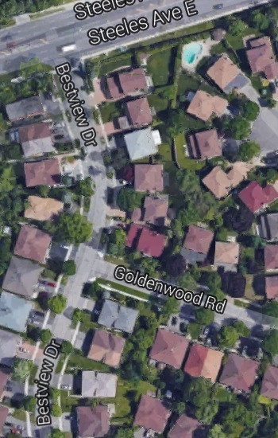
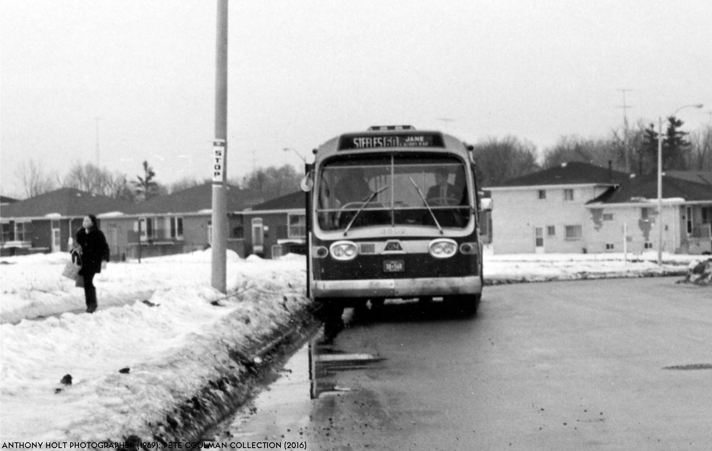
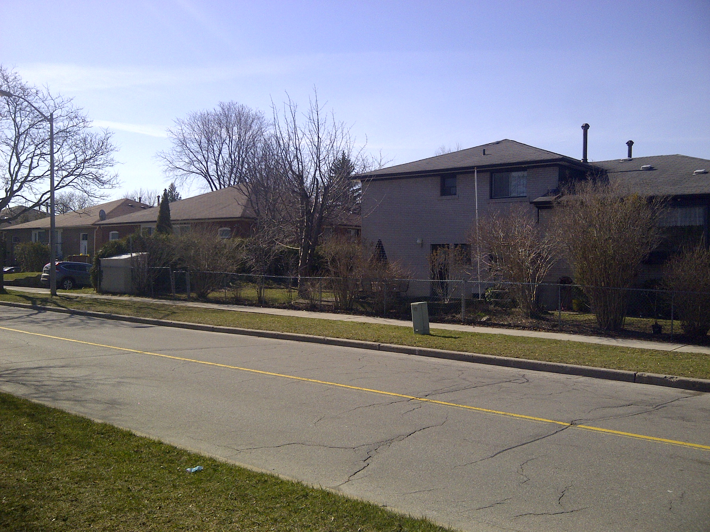
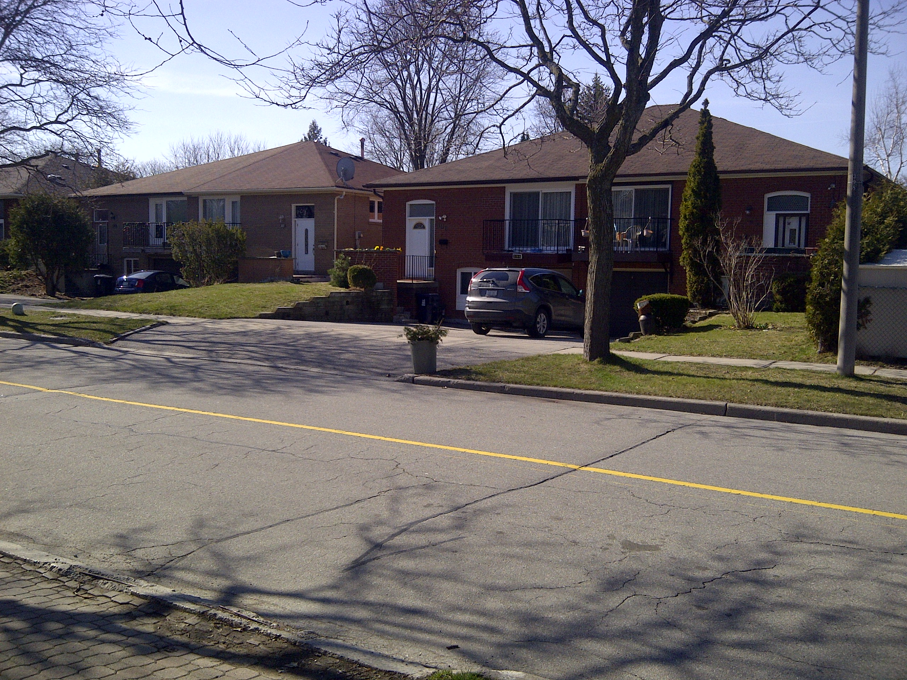

Bestview Drive and Steeles - Then and Now
April 24th 2016
Last Updated: April 24th 2016
Found this photo online of the TTC 60 bus in December of 1969. Apparently for a time the 60 bus would come down Steeles to Laureleaf, turn down to Bestview and come back to Steeles in order to turn around. The photos are taken from the south side of Steeles on Bestview Drive looking south towards Goldenwood Road. Assuming that the lamp posts have not been moved since 1969, I'm pretty sure I have taken the after photo in the right spot. It's a little hard to see the differences in the after photo because houses have been planted on the left side as well as trees planted since the 1969 photo was taken. Due to the lack of clarity in the after photo I took some close ups of the visible houses in present day.
If you have any additions pictures, find something wrong with my article, have something to add or to ask please feel free to contact me using the email on the "About Aaron Gavendo" page.
| Before (December 1969) | After (April 2016) |
|  |  |
| Here is a close up of the first three houses from the right | Here is a close up of the 2nd and 3rd houses from the right |  |  |